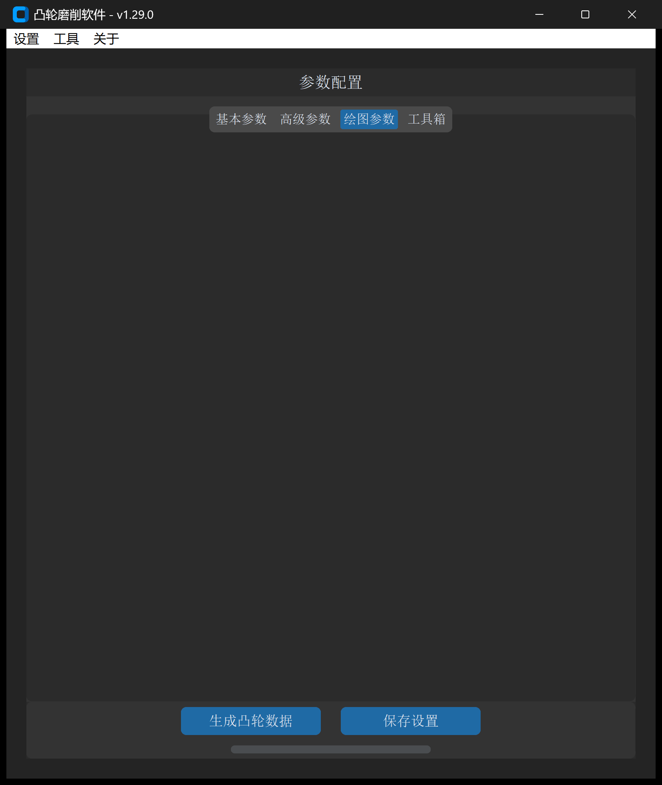

CAM 数据文件建模
“CAM 数据文件”工具用于根据给定的升程规律（Lift Table）、基圆半径以及随动件滚子直径，自动反求并绘制出高精度的凸轮工作轮廓 DXF 文件。
1. 操作界面与参数布局
打开主界面并切换至 绘图参数 -> CAM 数据文件：

2. CAM 数据文件语法与格式规范
CAM 数据文件是工业界常用的结构化描述文本，支持直接使用标准文本文件（.txt）或 Excel 表格（.xlsx）进行组织。
2.1 基础标记符语法
标准文本格式由三个核心指令标识符构成：
B,25.0 ; [B] 基圆半径 (Base Circle Radius) 为 25mm
G,12.0 ; [G] 测杆滚轮半径 (Roller Radius) 为 12mm
A,0,90,10 ; [A] 角度定义：0度到90度，步距10度（共10个数据点）
0.0 ; 0度升程
0.25 ; 10度升程
0.85 ; 20度升程
1.80 ; 30度升程
3.10 ; 40度升程
4.75 ; 50度升程
6.70 ; 60度升程
8.90 ; 70度升程
11.20 ; 80度升程
13.50 ; 90度升程
A,90,180,10 ; 远休止区：90度到180度
13.50 ; 若该段只写一行数值，系统将自动识别为该区间内升程恒定
A,180,360,10 ; 回程与近休止区
13.0
11.5
...
0.0
B标识符：指定凸轮名义基圆半径 。G标识符：指定测杆或从动件滚子半径 ：- 若输入的数据已经是凸轮本体实际轮廓，则将滚子半径设为
0； - 若机构采用平底从动件（平面随动件），理论上可近似输入一个远大于基圆的等效滚子半径（例如 10 倍基圆半径）；
- 若输入的是滚子中心运动轨迹，设置实际滚子半径后系统会自动包络求解工作轮廓。
- 若输入的数据已经是凸轮本体实际轮廓，则将滚子半径设为
A标识符：指定一个连续角度区间，后接三项参数：起始角度, 终止角度, 角度步距。在该标识符下方依次输入每个离散角度的升程数值。
3. 参数定义与配置说明
| 参数项 | 字段标识 | 推荐设置 | 说明与功能 |
|---|---|---|---|
| CAM 数据文件地址 | cam_data_file_path |
必填 | 包含 B/G/A 标记的 .txt 文本或规范排版的 .xlsx 文件路径 |
| 数据角度方向 | cam_data_direction |
逆时针 | 文本中角度增长方向：以 X 轴正向为基准，分为顺时针与逆时针 |
| 数据类型 | cam_data_type |
绝对值 | • 绝对值：文件中升程为以基圆为 0 的绝对值，直接与基圆相加； • 相对值：自动查找全周升程最小值，将其平移归零后再与基圆叠加 |
| 比例系数 | scale_factor |
1.0 |
整体放大、缩小或轴向镜像系数（负值实现镜像） |
| 图形旋转角度 | graph_rotate_angle |
0 |
最终生成的凸轮轮廓在平面内的旋转角度（顺时针为正，逆时针为负） |
| 绘制升程图形 | draw_lift |
勾选 | 勾选后输出交互式 HTML 运动学波形及克林伯格 P65 数据 |
| 基圆半径 | base_circle_radius |
自动/手动 | 若数据文件中未包含 B 指令，可在此手动输入基圆半径（mm） |
| 升程方向 | lift_direction |
顺时针 | 极坐标展开方向，推荐保持顺时针以便与机床加工坐标对齐 |
| X 轴缩放 | lift_curve_x_axis_scale |
1.0 |
HTML 交互图表横轴显示缩放倍数 |
| DXF 保存地址 | output_path |
必填 | 目标生成 DXF 文件的保存路径 |
4. 建模与工程验证流程
- 导入与解析：在界面选择待处理的 CAM 数据文件，点击解析；
- 基圆与从动件确认：校验基圆半径与滚子半径是否与机械设计图纸相符；
- 闭合性与平滑度检查：
- 检查起始角（）与终止角（）升程是否连续平滑闭合；
- 检查生成的 HTML 交互图表中的速度曲线与加速度曲线是否存在突变台阶（防止机构发生刚性冲击或柔性冲击）；
- 生成 DXF：点击 生成凸轮数据，生成符合数控磨床编程要求的闭合轮廓。